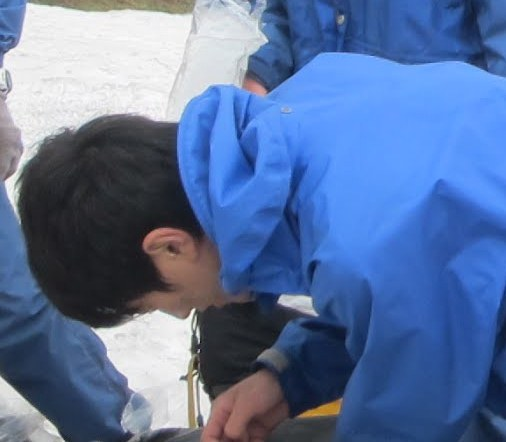

部員紹介 二年会
| 一山智弘（いちやま ともひろ） | ||
 |
好きな行動食 | ハチミツむしパン |
|---|---|---|
| 好きな四字熟語 | 柏木由紀 | |
| ワンゲルで学んだこと | 無限等比級数を使った米の７等分法 | |
| ワンゲルで一番つらかったこと | 起床係 | |
| 将来の夢 | ビンボー数学者 | |
| 来年の目標 | 夏合宿雨藪隊で完遂！（笑） | |
| ひと言：ラーメンと餅は混ぜて食べるもんじゃないですよ | ||
| 大橋宗史（おおはし ひろふみ） | ||
 |
行きたいところ | 北海道 |
|---|---|---|
| 趣味 | サッカー観戦、鉄道旅行etc | |
| 好きなアプローチ | 上越線鈍行 | |
| 今年の目標 | 山スキーに挑戦 | |
| 今後の目標 | 少林寺との運動会兼部の維持 | |
| ひと言：秋から軍資金集めに奔走します | ||
| 高市雄太（たかいち ゆうた） | ||
 |
趣味 | 野球観戦（巨人メイン）、地域行事（祭り、花火とか）を見たりやったり |
|---|---|---|
| やってみたいこと | 海外（先進国以外）でのんびりする | |
| 行ってみたいところ | 宇宙 | |
| 好きな球団 | 巨人、ヤクルト | |
| 今年の目標 | 冬の間に来年の夏山の資金集め | |
| ひと言：木に囲まれた山行が良い、限界上はただ寒いだけ | ||
| 陳立峻（ちん りっしゅん） | ||
 |
趣味 | サイクリング |
|---|---|---|
| 好きな行動食 | 板チョコ、ドライフルーツ | |
| 好きな本 | ドラえもん、ジョジョの奇妙な冒険 | |
| 行ってみたいところ | 西表島周辺の無人島 | |
| 将来の夢 | 自室から出ずに生計を立てる | |
| 今年の目標 | 地図を読めるようになる | |
| ひと言：来年は仕事します。 | ||
| 豊島理史（とよしま さとし） | ||
| 趣味 | 野球観戦（カープ） | |
|---|---|---|
| 好きな山行スタイル | 長期縦走、沢登り | |
| 行ってみたいところ | インド、ネパール | |
| やってみたいこと | 徒歩か自転車で日本一周 | |
| 今年の目標 | 忘れ物をしない | |
| ひと言：カープファンの入部を期待します | ||
| 村瀬唯斗（むらせ ゆいと） | ||
| また行きたい山行 | 男体女峰、南アルプス | |
|---|---|---|
| 好きな小説 | 四畳半神話大系 | |
| 行ってみたいところ | バルカン半島 | |
| ひと言：夏の六甲山はおすすめ。 | ||
| 茂木聖（もてぎ さとる） | ||
|  | 趣味 | 古墳巡り、寺社巡り、友達の家に夕飯をたかりに行くこと |
|---|---|---|
| 好きな教官 | 火曜５限、比較地域史の鈴木直志先生 | |
| 行ってみたいところ | 大仙古墳 | |
| やってみたいこと | 理系トークにまぜてもらうこと | |
| 今年の目標 | 下宿に巣くう害虫たちとの共存共栄 | |
| ひと言：一緒に群馬ネタまたは文系トークで盛り上がってくれる方、募集してます。 | ||
Copyright(c) 2013 TWV All rights reserved.